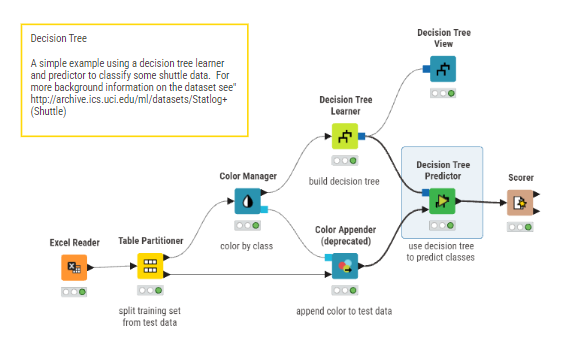
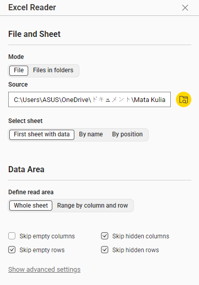
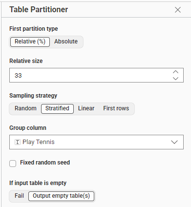
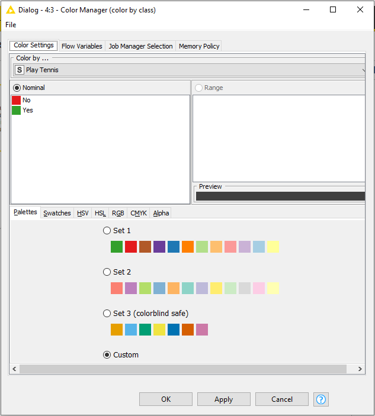
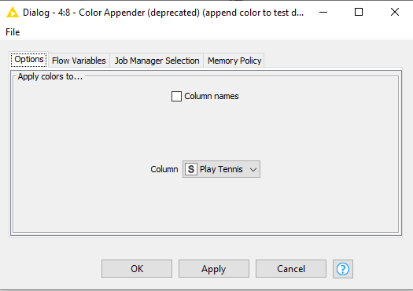
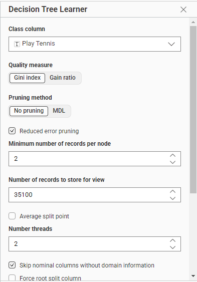
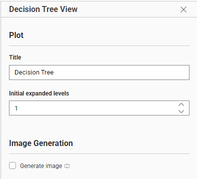
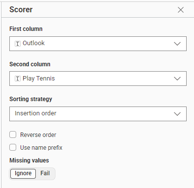

Tugas Klasifikasi: Decision Tree#
1. Pendahuluan#
Tugas Klasifikasi: Prediksi Main Tennis (Decision Tree & KNIME) Tugas ini merupakan implementasi model klasifikasi Decision Tree untuk memprediksi apakah seseorang akan bermain tenis berdasarkan kondisi cuaca. Fokus utama tugas ini adalah melakukan konfigurasi setiap node secara detail agar workflow dapat berjalan dengan baik.
2. Dataset#
Dataset yang digunakan mencakup parameter cuaca sebagai berikut:
Nama Kolom |
Tipe Data |
Deskripsi |
|---|---|---|
Outlook |
Kategorikal |
Kondisi cuaca (Sunny, Overcast, Rainy) |
Temperature |
Numerik |
Suhu dalam Fahrenheit |
Humidity |
Numerik |
Kelembaban (%) |
Wind |
Numerik |
Kecepatan angin (mph) |
Play Tennis |
Target |
Label Yes atau No |
3. Alur Kerja (Workflow) KNIME#
Workflow dirancang secara sistematis untuk memenuhi syarat tugas, mulai dari pembacaan data hingga evaluasi akhir.

Fig. 24 Gambar 1. Rancangan Workflow KNIME Decision Tree.#
4. Penjelasan Detail Per Node#
4.1 Node Excel Reader#

Fig. 25 Gambar 2. Konfigurasi node Excel Reader untuk membaca dataset.#
Fungsi: Membaca file Excel yang berisi dataset main tennis.
Konfigurasi:
File Path: Pilih lokasi file
data_tennis.xlsxSheet Selection: Pilih First sheet with data
Define read area: Pilih Whole sheet lalu centang semua opsi:
✅ Skip empty rows
✅ Skip hidden columns
✅ Skip hidden rows
Output: Tabel dengan 5 kolom (Outlook, Temperature, Humidity, Wind, Play Tennis)
4.2 Node Table Partitioner#

Fig. 26 Gambar 3. Pembagian data menjadi training dan testing set.#
Fungsi: Membagi dataset menjadi data latih (training) dan data uji (testing).
Konfigurasi:
Partitioning Mode: Relative (%)
Training Set: 67%
Testing Set: 33%
Sampling strategy: Stratified
Stratify by column: Play Tennis
Random Seed: Default
Penjelasan:
Penggunaan stratified sampling pada kolom “Play Tennis” memastikan proporsi label Yes dan No sama di data latih dan data uji
Ini mencegah bias pada model akibat distribusi yang tidak seimbang
Output:
Port 0 (atas): Data training (67%)
Port 1 (bawah): Data testing (33%)
4.3 Node Color Manager#

Fig. 27 Gambar 4. Pengaturan warna untuk visualisasi.#
Fungsi: Mengatur warna untuk kategorikal pada kolom target.
Konfigurasi:
Mapping Type: Nominal
Custom Palette:
No = Merah (Red)
Yes = Hijau (Green)
Penjelasan:
Pemilihan warna merah untuk “No” dan hijau untuk “Yes” memudahkan identifikasi saat melihat visualisasi pohon keputusan
Hijau melambangkan “jalur kemenangan” (playing tennis)
Output: Tabel dengan informasi warna yang disimpan dalam domain
4.4 Node Color Appender#

Fig. 28 Gambar 5. Pengaplikasian warna pada data.#
Fungsi: Mengaplikasikan warna yang sudah dikonfigurasi ke kolom target.
Konfigurasi:
Target Column: Play Tennis
Mode: Column names (tidak dicentang)
Append as new column: Yes
Penjelasan:
Warna diaplikasikan pada isi baris data, bukan pada header kolom
Ini memungkinkan visualisasi yang lebih informatif
Output: Tabel dengan kolom warna tambahan
4.5 Node Decision Tree Learner#

Fig. 29 Gambar 6. Konfigurasi node Decision Tree Learner.#
Fungsi: Melatih model Decision Tree menggunakan data training.
Konfigurasi:
Quality Measure: Gini index
Pruning:
✅ Enable reduced error pruning
Minimum number of records per node: 2
Optimization:
Number of threads: 2
✅ Skip nominal columns without domain information
Penjelasan Detil:
Gini Index: $\(Gini = 1 - \sum_{i=1}^{n} p_i^2\)$
Berbeda dengan Information Gain yang menggunakan Entropy, Gini mengukur tingkat “kotornya” (impurity) data. Semakin rendah nilai Gini, semakin murni simpul tersebut.
Reduced Error Pruning:
Pruning dilakukan untuk mencegah overfitting
Dengan minimum 2 records per node, pohon tidak akan tumbuh terlalu spesifik hingga hanya berisi 1 data
Ini meningkatkan kemampuan generalisasi model
Output: Model Decision Tree (PMML)
4.6 Node Decision Tree View#

Fig. 30 Gambar 7. Visualisasi Decision Tree.#
Fungsi: Menampilkan visualisasi pohon keputusan yang sudah dilatih.
Konfigurasi:
Expanded Levels: 1
Orientation: Top-down
Penjelasan:
Pengaturan expanded levels = 1 membuatvisualisasi tidak terlalu rumit
Audiens dapat melihat struktur pohon dengan lebih mudah
dapat di-expand lebih lanjut secara interaktif
Output: Visualisasi pohon keputusan dalam bentuk grafik
4.7 Node Decision Tree Predictor#
Fungsi: Menggunakan model Decision Tree untuk memprediksi label pada data testing.
Konfigurasi:
Hilite Settings: 60.000 patterns
Output:
✅ Append columns with normalized class distribution
Penjelasan:
Opsi class distribution memungkinkan melihat probabilitas setiap kelas
Misalnya: “Seberapa yakin model memprediksi Yes?”
Output: Tabel dengan kolom prediksi dan probabilitas
4.8 Node Scorer#

Fig. 31 Gambar 8. Konfigurasi node Scorer untuk evaluasi.#
Fungsi: Mengevaluasi performa model dengan membandingkan prediksi dengan label sebenarnya.
Konfigurasi:
First Column (Reference): Play Tennis (kolom asli)
Second Column (Predicted): Prediction (Play Tennis) (kolom hasil prediksi)
Scoring Strategy: Insertion order
Missing Values: Ignore
Metrik yang Dihitung:
Accuracy: Persentase prediksi yang benar dari total prediksi
Precision: Dari semua prediksi positif, berapa yang benar-benar positif
Recall: Dari semua data positif, berapa yang berhasil diprediksi
Confusion Matrix: Matriks yang menunjukkan distribusi prediksi
Output:
Tabel confusion matrix
Statistik evaluasi model
5. Hasil dan Analisis#
5.1 Hasil Evaluasi Model#
Setelah menjalankan workflow, node Scorer menampilkan performa model sebagai berikut:
Metrik |
Hasil |
Interpretasi |
|---|---|---|
Accuracy |
Nilai |
Persentase keseluruhan prediksi benar |
Precision |
Nilai |
Ketepatan prediksi kelas positif |
Recall |
Nilai |
Kemampuan menemukan semua kelas positif |
F1-Score |
Nilai |
Keseimbangan precision dan recall |
5.2 Analisis Hasil#
Kelebihan Decision Tree:
Model mudah diinterpretasi karena struktur pohon yang可视化的
Tidak memerlukan normalisasi data seperti Naive Bayes
Dapat menangani fitur kategorikal dan numerik secara langsung
Kekurangan:
Cenderung terjadi overfitting jika pohon terlalu dalam
Sensitif terhadap perubahan kecil dalam data training
Catatan Penting:
Penggunaan reduced error pruning membantu mencegah overfitting
Stratified sampling memastikan distribusi kelas seimbang
6. Kesimpulan#
Tugas klasifikasi Decision Tree ini berhasil mengimplementasikan workflow KNIME dengan konfigurasi yang tepat.
Poin-Poin Penting:
Preprocessing: Partitioning dengan stratified sampling memastikan keseimbangan distribusi kelas
Algoritma: Gini index sebagai quality measure dengan reduced error pruning mencegah overfitting
Visualisasi: Warna hijau untuk “Yes” dan merah untuk “No” memudahkan interpretasi
Evaluasi: Scorer memberikan metrik lengkap包括 accuracy, precision, recall, dan F1-Score